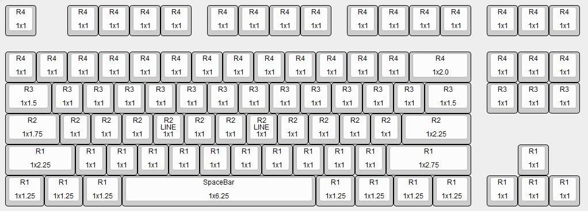

Why does this page exist?
Mechanical keyboards and keycaps is a very obscure world, and I don't fully understand all the standards and options myself, so this is a short guide for how to buy keycaps as a gift for me if you want to.
What are keycaps?
I have a keyboard that allows customization of the keycaps on it.

All the white keys came with my keyboard, but the escape key, super keys, and spacebar are all customized, and I have more coming.
Different Standards
There are a few different standards with mechanical keyboards in two different areas: the switch and the key profile.
The Switch
The switch is the actual button for a key - there are a few different kinds but almost everything, including my board, is Cherry MX. The bottom of the key looks like a cylinder with a plus shaped hole in it.
The profile
The profile of the keys is where it gets complicated and confusing. The profile of the key is the specific shape and specifications of the key. Using a key with a profile that is different than the rest of the keys on the board is very disorienting. There are two major profiles: OEM and Cherry.
The Cherry profile is made by the same company that makes the switches, but is not exusive with the switch type. The OEM profile has existed for over 50 years and is the most popular. I have Cherry switches but an OEM profile for my keys.
Rows & Keyboard Layout
The row part of the OEM profile is the most complicated part of Keycaps but I will do my best to explain it. Basically - there are four different rows, R1, R2, R3, and R4. The above image is a diagram of which keys are in what row. The top two are R4, the next is R3, then R2, and the bottom two are R1. The two keys in R2 that say LINE are the F and J keys. They have small bump-lines on them.
The above diagram is also the exact layout of my keyboard. If you want to get a key for a specific location please consult this chart. On each key is the size (example: the spacebar has a size of 1x6.25).
Where to get Keycaps
My two favorite places to get keycaps are WASDkeyboards and Etsy. WASDkeyboards is the "shutterstock of keycaps" because they make basic plastic keycaps of all sizes and colors, and also can print any text or image on the top of any sized keycap; they have the ability to print to the edge of the top of the key only. Etsy is very good for finding artisianal keycaps.
Before buying any keys, please make sure that they are compatible with Cherry MX switches and have an OEM profile. The only exception to this is if there is an artisian key with either a clear part or a specifically shaped key. Examples are below.
Specifics and Exclusions
Please do not get me full keycap sets, or in general anything that has letter keys unless it is a WASD set; and please do not get me anything with a Windows logo or "win" on it. I recommend for you to stick to R4 keys or larger keys such as the enter or backspace button.